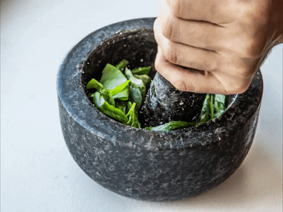

Description:
Whizz up delicious homemade pesto in under 15 minutes
using just five ingredients. This herby Italian-style
sauce is great stirred through pasta for a quick meal
Homemade pesto is one of the best ways to enjoy a bounty
of fresh basil. It's great on pasta, baked potatoes, pizza,
or bread. Make it in just 15 minutes!
Ingredients:
- 50g pine nuts
- 80g basil
- 50g parmesan or vegetarian alternative
- 6-8 leaves of fresh basil, finely chopped
- 150ml olive oil
- 2 garlic cloves
The step-by-step:
- Heat a small frying pan over a low heat.
Cook the pine nuts until golden, shaking
occasionally. Put into a food processor
with the basil, parmesan, olive oil and
garlic cloves. Whizz until smooth, then
season to taste.
Return home